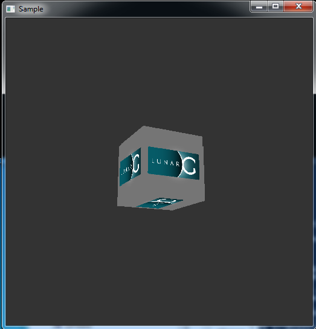
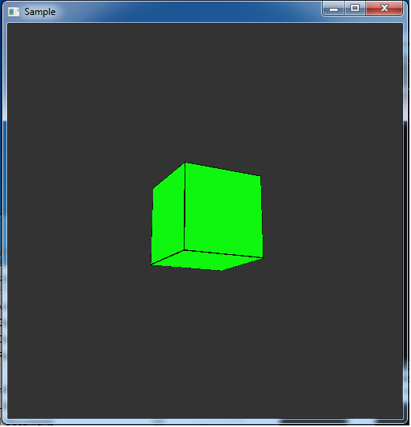
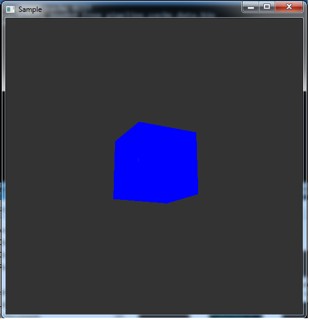

Sponsored by

Intro
The following samples and layers are hosted on the LunarG VulkanSamples GitHub repository.
Many of these samples will be included as binaries in the LunarG Vulkan SDK. In order to obtain the LunarG Vulkan SDK, please visit our
LunarXChange host.
For more information on Khronos, Vulkan, or SPIR-V, visit: https://www.khronos.org.
Sections
(click to jump to appropriate section)
LunarG Hello Vulkan Samples
For those who have only heard of Vulkan, and not yet written a Vulkan graphics application, the following Vulkan samples represent a basic progression towards your first rendered 3D image using the Vulkan API. When possible, functionality from previous steps is abstracted using utility calls to allow you to view just the code necessary for the current step.
| Step | Sample Name | Description | Primary Functions |
|---|---|---|---|
| 1 | 01-init_instance | Create and destroy a Vulkan instance |
vkCreateInstance, vkDestroyInstance |
| 2 | 02-enumerate_devices | Enumerate physical devices | vkEnumeratePhysicalDevices |
| 3 | 03-init_device | Create and destroy a Vulkan device |
vkCreateDevice, vkDestroyDevice |
| 4 | 04-init_command_buffer | Create a Vulkan Command buffer |
vkCreateCommandPool, vkDestroyCommandPool, vkAllocateCommandBuffers, vkFreeCommandBuffers |
| 5 | 05-init_swapchain | Init a Vulkan Swapchain |
PFN_vkCreateSwapchainKHR, PFN_vkDestroySwapchainKHR, PFN_vkGetSwapchainImagesKHR, PFN_vkAcquireNextImageKHR, vkGetDeviceQueue, vkCreateImageView, vkDestroyImageView |
| 6 | 06-init_depth_buffer | Create a Vulkan Depth buffer |
vkAllocateMemory, vkBindImageMemory, vkFreeMemory, vkDestroyImageView |
| 7 | 07-init_uniform_buffer | Create a Vulkan Uniform buffer |
vkCreateBuffer, vkGetBufferMemoryRequirements, vkAllocateMemory, vkMapMemory, vkUnmapMemory, vkBindBufferMemory, vkDestroyBuffer |
| 8 | 08-init_pipeline_layout | Create Descriptor Layout and Pipeline Layout |
vkCreateDescriptorSetLayout, vkDestroyDescriptorSetLayout, vkCreatePipelineLayout, vkDestroyPipelineLayout |
| 9 | 09-init_descriptor_set | Allocate, setup, and destroy a Vulkan Descriptor Set |
vkCreateDescriptorPool, vkAllocateDescriptorSets, vkUpdateDescriptorSets, vkDestroyDescriptorPool |
| 10 | 10-init_render_pass | Initialize a Vulkan Render pass |
vkCreateRenderPass, vkDestroyRenderPass |
| 11 | 11-init_shaders |
Initialize Vertex and Fragment Shaders. NOTE: This example converts shaders from GLSL into SPIR-V using GLSLang |
vkCreateShaderModule, vkDestroyShaderModule |
| 12 | 12-init_frame_buffers | Initialize the Vulkan Framebuffer |
vkCreateFramebuffer, vkDestroyFramebuffer |
| 13 | 13-init_vertex_buffer | Create a Vulkan Vertex buffer | vkCmdBindVertexBuffers |
| 14 | 14-init_pipeline | Create a Vulkan Graphics Pipeline |
vkCreatePipelineCache, vkDestroyPipelineCache, vkCreateGraphicsPipelines, vkDestroyPipeline |
| 15 | 15-draw_cube | Draw a 3D cube using Vulkan |
PFN_vkQueuePresentKHR, vkCmdBeginRenderPass, vkCmdEndRenderPass, vkCmdDraw, vkQueueSubmit, vkCmdPipelineBarrier, vkCreateSemaphore, vkDestroySemaphore, vkCreateFence, vkDestroyFence vkWaitForFences |

LunarG Additional Vulkan Samples
These are additional LunarG created samples which build upon the above ones to provide
more coverage beyond basic rendering.
Community Sample Submission Policy
LunarG is interested in sharing your samples with the SDK. If you are interested in providing a sample for the Vulkan SDK, refer to the README-controb.md file found with the Vulkan Sample source. All contributed samples must be released under a BSD-style license.
NOTE:Items are sortable by column.
| Sample Name | Sample Image | Description | Noteable Features | Vulkan Version | Group |
|---|---|---|---|---|---|
| copy_blit_image |

|
Copy/Blit an image from one buffer to another. | VkImageCopy VkImageBlit |
1.0 | Vulkan-Extended |
| dbg_create_msg_callback | Create and Destroy a Debug message callback for Vulkan. | PFN_vkDbgCreateMsgCallback PFN_vkDbgDestroyMsgCallback |
1.0 | Vulkan-Debug-01 | |
| draw_subpasses |

|
Render two multi-subpass render passes with different framebuffer attachments. | Multiple Sub-passes | 1.0 | Vulkan-Extended |
| draw_textured_cube |  | Draw a textured 3D cube in Vulkan. | Simple texturing | 1.0 | Textured-Cube-2 |
| dynamic_uniform |

|
Draw 2 cubes using a Dynamic Uniform Buffer. | VK_DESCRIPTOR_TYPE_UNIFORM_BUFFER_DYNAMIC | 1.0 | Vulkan-Extended |
| enable_validation_with_callback | Use Common Vulkan Validation Layers to Evaulate Usage. | Layer usage | 1.0 | Vulkan-Debug-02 | |
| enumerate_adv | Explore the Physical Device properties. | Physical Device Info | 1.0 | Hello-Vulkan-02B (optional) | |
| events | Wait for and set events on the GPU and CPU | vkCmdWaitEvents vkSetEvent vkCmdSetEvent vkGetEventStatus |
1.0 | Vulkan-Extended | |
| immutable_sampler |

|
Use an Immutable Sampler to texture a cube. | VK_DESCRIPTOR_TYPE_COMBINED_IMAGE_SAMPLER VkDescriptorSetLayoutBinding.pImmutableSamplers |
1.0 | Vulkan-Extended |
| init_texture | Setup a texture and sampler. | vkGetImageSubresourceLayout vkCmdCopyImage vkCreateImageView vkDestroyImageView vkCreateSampler vkDestroySampler |
1.0 | Textured-Cube-1 | |
| input_attachment |

|
Use an input attachment to color a triangle | subpassLoad VK_DESCRIPTOR_TYPE_INPUT_ATTACHMENT VK_IMAGE_USAGE_INPUT_ATTACHMENT_BIT |
1.0 | Vulkan-Extended |
| instance_extension_properties | Get global extension properties to know what extension are available to enable at CreateInstance time. | vkEnumerateInstanceExtensionProperties | 1.0 | Hello-Vulkan-01B (optional) | |
| instance_layer_extension_properties | Get list of global layers and their associated extensions, if any. | vkEnumerateInstanceExtensionProperties | 1.0 | Hello-Vulkan-01D (optional) | |
| instance_layer_properties | Get global layer properties to know what layers are available to enable at CreateInstance time. | vkEnumerateInstanceLayerProperties | 1.0 | Hello-Vulkan-01C (optional) | |
| memory_barriers |

|
Use memory barriers to clear a texture between draws (read, write, read) | VkCmdPipelineBarrier | 1.0 | Vulkan-Extended |
| multiple_sets |

|
Use multiple descriptor sets to draw a textured cube. | VkWriteDescriptorSet vkUpdateDescriptorSets |
1.0 | Vulkan-Extended |
| multithreaded_command_buffer |

|
Use per-thread command buffers to draw 3 triangles. | Multi-threading | 1.0 | Vulkan-Extended |
| occlusion_query |

|
Use occlusion query to determine if drawing renders any samples. This could be used to quickly determine if more expensive rendering should be done. | vkCmdBeginQuery vkCmdCopyQueryPoolResults vkCmdEndQuery vkCreateQueryPool vkDestroyQueryPool vkGetQueryPoolResults |
1.0 | Vulkan-Extended |
| pipeline_cache |

|
Create and use a pipeline cache accross runs. | vkCreatePipelineCache vkGetPipelineCacheData |
1.0 | Vulkan-Extended |
| push_constants |

|
Use push constants in a simple shader, validate the correct value was read. | vkCmdPushConstants | 1.0 | Vulkan-Extended |
| push_descriptors | Use VK_KHR_push_descriptor extension to draw textured cube | vkCmdPushDescriptorSetKHR | 1.0 | Vulkan-Extended | |
| secondary_command_buffer |
|
Draw several cubes using primary and secondary command buffers. | VK_COMMAND_BUFFER_LEVEL_SECONDARY VK_SUBPASS_CONTENTS_SECONDARY_COMMAND_BUFFERS |
1.0 | Vulkan-Extended |
| separate_image_sampler |  | Use separate image and sampler in descriptor set and shader to draw a textured cube. | VkSampler | 1.0 | Vulkan-Extended |
| spirv_assembly |

|
Demonstrate how to use SPIR-V shaders with inline assembly. | SPIR-V | 1.0 | Vulkan-Extended |
| spirv_specialization |  | This sample creates a mini-ubershader that changes its behavior based on specialization constants provided at pipeline creation. | SPIR-V | 1.0 | Vulkan-Extended |
| template |

|
Template sample to start from. Draw textured cube with mostly helpers. | Beginning Framework | 1.0 | Vulkan-Extended |
| texel_buffer |

|
Use a texel buffer to draw a magenta triangle. | vkCreateBufferView vkDestroyBufferView |
1.0 | Vulkan-Extended |
Other Demos and Layers
The following are additional Vulkan Demos and Layers included in the LunarG Vulkan SDK.
Demos
| Name | Image | Contributor | Description | Vulkan Version |
|---|---|---|---|---|
| cube |

|
LunarG | Spinning textured cube demo (C version). | 1.0 |
| cubepp |
|
LunarG | Spinning textured cube demo (C++11 version). | 1.0 |
| Hologram |

|
Particle style demo using multiple threads to render. | 1.0 |
Layers
| Name | Layer Image | Contributor | Description | Vulkan Version |
|---|---|---|---|---|
| overlay |

|
Overlays text on the current application. | 1.0 |
Additional thanks
|